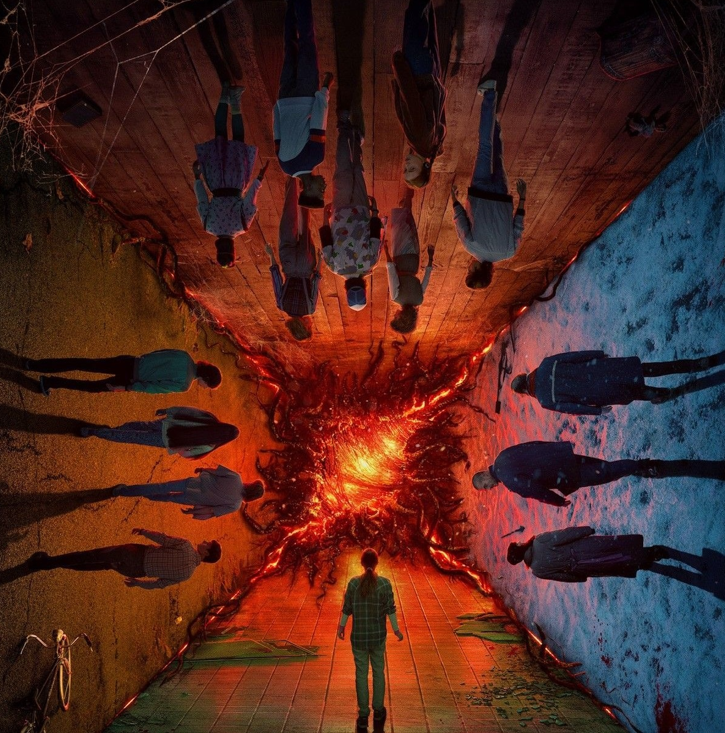
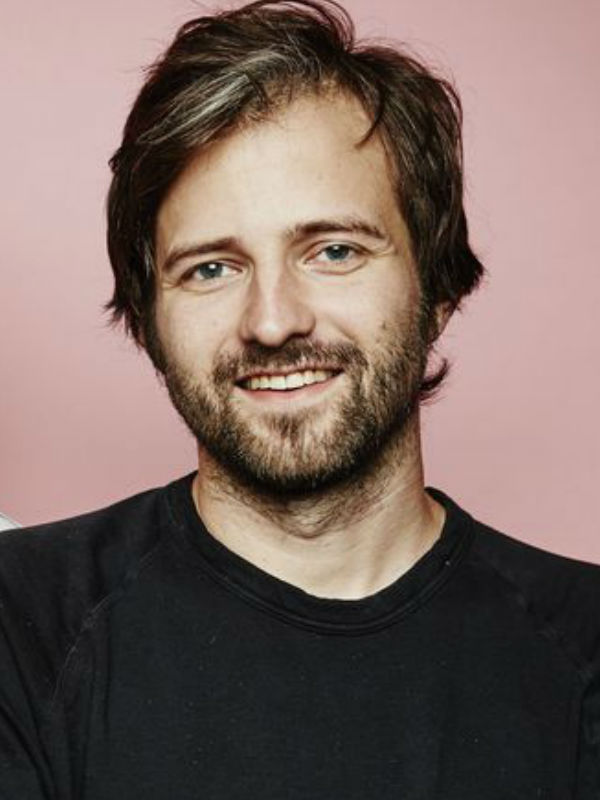
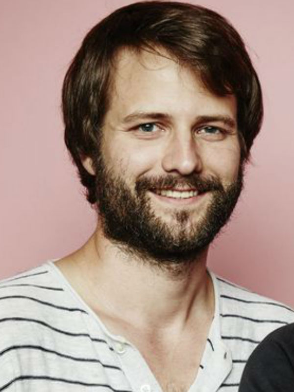

A primeira temporada da série estreou em 15 de julho de 2016. Se passa na cidade fictícia de Hawkins, Indiana, Estados Unidos, durante a década de 1980, quando um menino de doze anos chamado Will Byers desaparece misteriosamente. Pouco depois, Onze, uma garota aparentemente fugitiva com poderes telecinéticos, conhece Mike, Dustin e Lucas, amigos de Will, e os ajuda na busca por Will.
A segunda temporada estreou em 27 de outubro de 2017 e se passa um ano após os eventos da primeira temporada. É abordado as tentativas dos personagens de retornar à normalidade e das consequências que persistem desde o ano anterior, onde Will fica com sequelas do mundo invertido. A terceira temporada estreou em 4 de julho de 2019 e é ambientada no verão americano de 1985, onde os personagens precisam lidar com o início da adolescência e de novos eventos sobrenaturais após a abertura de um shopping na cidade e a chegada de uma perigosa equipe russa que planeja abrir o portal do mundo invertido.

